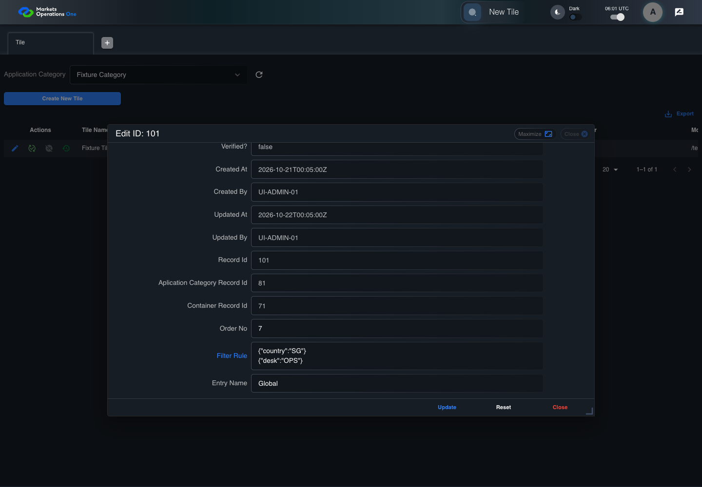
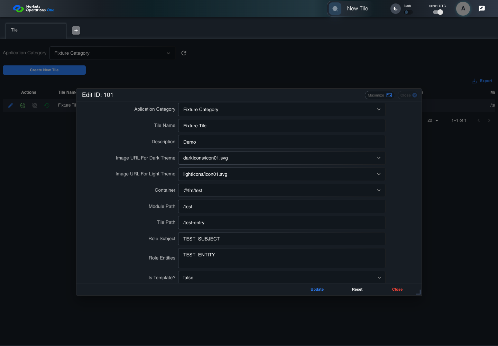

UI-ADM-SEL-014 actual administration UI with step evidence
PASS · application/run-050/ui-adm-sel-014-actual-administration-ui-with-step-evidence-dc9e71a50d4f-attempt-1 · ACTUAL_APPLICATION_LOCAL_SERVICES
Actual current React administration screens. Controlled browser login supplies UI-ADMIN-01 and TEST_OWNER, or the declared SUPER_USER. Controlled BFF routes return the case-declared records. Other controlled saves persist submitted field values. This run establishes frontend handling only. It does not execute BFF validation, storage, audit generation, or authorization.
2026-10-22T06:01:04.031Z to 2026-10-22T06:01:10.143Z
Assertions and result · Artifact manifest · Exact run inputs and source hashes
Result SHA-256:88af26d6550fd673b032bfeb365181a7546f432797bf957a7bc42dc71579ca88Machine observations
- ui-origin-admin-requests.json
2651c2d74f912ae029636a2a03288793a8cf01d9e0f758c7fb04a979bf2e3c9e
Screenshot capture: CAPTURED. Named frames: 8.
Step screenshot bindings: COMPLETE. 7/7 canonical steps have execution screenshots.
Bindings measure structural coverage only. They do not establish screenshot content quality or relevance.
Screenshot content review: NOT_REVIEWED. Recorded context: 0/8 frames. Identical image bytes: 1 repeated frames. Recorded context does not establish human visual review.
Canonical step timeline
Given Admin A is authenticated as fixture UI-ADMIN-01 with the case-specific permissions
Execution: PASSED.
1. step-01 Visible state after step 1: Given Admin A is authenticated as fixture UI-ADMIN-01 with the case-specific permissions
2026-10-22T06:01:06.614Z · 1440×1000
Step: /Users/lushevol/code/github/ratan-release-impact/workbench/tasks/ui-test-coverage-20261022/test-cases.md:9779
SHA-256:9fc2d11cf595e53fa313be1cad75837239b71b55f274004751552113066a140cAnd Tile edit form is open and controlled update preserves Filter Rule {"country":"SG"} on one line and {"desk":"OPS"} on another
Execution: PASSED.2. step-02 Visible state after step 2: And Tile edit form is open and controlled update preserves Filter Rule {"country":"SG"} on one line and {"desk":"OPS"} on another
2026-10-22T06:01:08.232Z · 1440×1000
Step: /Users/lushevol/code/github/ratan-release-impact/workbench/tasks/ui-test-coverage-20261022/test-cases.md:9780
SHA-256:919930c2a743655e01d9b8d66a3d11c1fcd2c27c7d3e0c725ffdc13a23953b64When Admin A enters exactly "{"country":"SG"}\n{"desk":"OPS"}" into textarea named "Filter Rule" inside the dialog named "edit ID: 101" inside the "Tile" administration tabpanel where \n represents one line break
Execution: PASSED.
3. step-03 Visible state after step 3: When Admin A enters exactly "{"country":"SG"}\n{"desk":"OPS"}" into textarea named "Filter Rule" inside the dialog named "edit ID: 101" inside the "Tile" administration tabpanel where \n represents one line break
2026-10-22T06:01:08.386Z · 1440×1000
Step: /Users/lushevol/code/github/ratan-release-impact/workbench/tasks/ui-test-coverage-20261022/test-cases.md:9781
SHA-256:1ba7cb0301a5a7b72e18ecca999e7e6603442a2c2f512280a14735e81968d3e1And the declared controlled field clock advances by 300 milliseconds
Execution: PASSED.4. step-04 Visible state after step 4: And the declared controlled field clock advances by 300 milliseconds
2026-10-22T06:01:08.591Z · 1440×1000
Step: /Users/lushevol/code/github/ratan-release-impact/workbench/tasks/ui-test-coverage-20261022/test-cases.md:9782
SHA-256:4a41488b19d11061838b650f320891a16a40f6f533c215b2f3efafe29dde02e0And Admin A clicks button named "Update" inside the dialog named "edit ID: 101" inside the "Tile" administration tabpanel
Execution: PASSED.
5. step-05 Visible state after step 5: And Admin A clicks button named "Update" inside the dialog named "edit ID: 101" inside the "Tile" administration tabpanel
2026-10-22T06:01:08.839Z · 1440×1000
Step: /Users/lushevol/code/github/ratan-release-impact/workbench/tasks/ui-test-coverage-20261022/test-cases.md:9783
SHA-256:0ba2add1e8c1f5050bdb518d57f3ecc960e449198ed4bc628bb744ed99d4aa64And Admin A clicks icon button named "Edit" inside row with Record Id "101" in the "Tile" administration data grid
Execution: PASSED.
6. step-06 Visible state after step 6: And Admin A clicks icon button named "Edit" inside row with Record Id "101" in the "Tile" administration data grid
2026-10-22T06:01:09.224Z · 1440×1000
Step: /Users/lushevol/code/github/ratan-release-impact/workbench/tasks/ui-test-coverage-20261022/test-cases.md:9784
SHA-256:919930c2a743655e01d9b8d66a3d11c1fcd2c27c7d3e0c725ffdc13a23953b64Image bytes match frame 2. An unchanged image can be valid for consecutive assertions. This match does not establish correct step content.
Then textarea named "Filter Rule" inside the dialog named "edit ID: 101" inside the "Tile" administration tabpanel has exactly the value "{"country":"SG"}\n{"desk":"OPS"}" where \n represents one line break
Execution: PASSED.
7. step-07 Visible state after step 7: Then textarea named "Filter Rule" inside the dialog named "edit ID: 101" inside the "Tile" administration tabpanel has exactly the value "{"country":"SG"}\n{"desk":"OPS"}" where \n represents one line break
2026-10-22T06:01:09.324Z · 1440×1000
Step: /Users/lushevol/code/github/ratan-release-impact/workbench/tasks/ui-test-coverage-20261022/test-cases.md:9785
SHA-256:2f8bd047a472a9e1e57e6f75f6e075c3cfd64ae51b4a82dc258dc5f81cd612ee
Additional named frames

The final visible state after the named test assertions.
2026-10-22T06:01:09.514Z · 1440×1000Step: Test source: /Users/lushevol/code/github/ratan-release-impact/workbench/e2e/audit-specs/admin-expanded.spec.ts:15
SHA-256:
b1bf5a66995e095924d76fee3d40843a5b53690ff56b4b38a29792fc5f37cf4dScreenshots establish visible state only. Assertions and traces support functional claims.